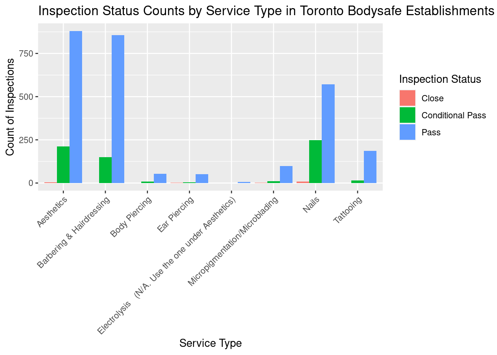
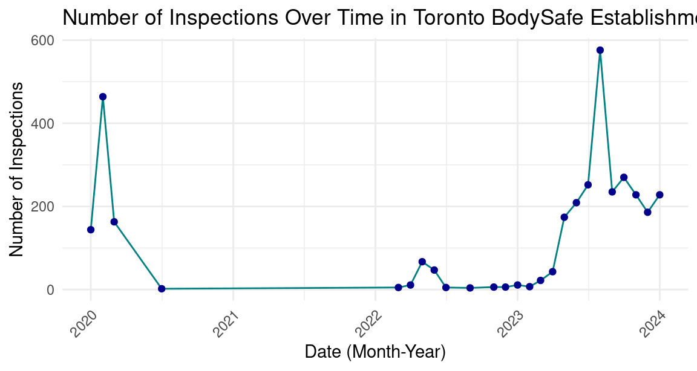

Evaluating Public Health Standards in Toronto: An Analysis of BodySafe Inspection Data
Abstract
This study presents a comprehensive analysis of public health inspection data from Toronto’s BodySafe program, aiming to evaluate the safety standards to personal service in the city. We examine the trends in public health standards including spas, salons and tatto parlors. We focuses on infraction categories, inspection outcomes. By investigating the correlation between service types, inspection results, and geographic distribution, this study provides insights of public health inspection results and variations in the frequency of inspections carried out over time at establishments regulated by Toronto’s BodySafe program.
Introduction
This paper offers a comprehensive exploration into the Toronto’s public health conditions through the BodySafe inspection data. We examine the hygiene and safety standards for several public services such as tattoo parlors, beauty salons, and spas(Gelfand 2020). These public services are considerably popular among women and it may result in safety hazard such as skin penetration due to the chemical exposures(FORD 2020). The primary goal of BodySafe is to minimize the risk of infections and promote safe practices in environment where the services involce close contact or shared equipment. Also, BodySafe plays a crucial role in protecting public and workers and maintaining consumer confidence in the safe environment across Toronto (Gallagher and Joppe 2016).
Data
Inspection Status Counts by Service Type in Toronto Bodysafe Establishments
The graph represents the frequency of diffrent inspection statuses across various service types in Toronto’s BodySafe establishments (Gelfand 2020). This will provide insights into how different types of estabilishments fare in inspections. The bar chart visually represents the number of different inspection statuses for various service types in Toronto Bodysafe estabilishments. Each bar represents a different service type, such as Nails, Aesthetics, Tattooing, etc., and is segmented by inspection status like pass, conditional pass, or fail.The service type with a high proportion of “pass” statuses have better health and safety standards, whereas the service type with “conditional pass” or “fail” indicate the improvements action they need to take.
The chart might also reveal trends specific for particular types of services. For example, some services might have more challenges in meeting the standard becuase the nature of the work, and it has a higher possibility to reieve conditional passes or fails.
This dataset contains 3365 inspections of various establishments such as beauty salons, spas, and tattoo parlors across Toronto. By using R (R Core Team 2020), an extract of the cleaned dataset (Table @ref(tab:dataextract)) is shown below.
We can also explore the number of inspections conducted over time in Toronto’s BodySafe establishments, and we can see the trends and patterns of the frequency of the inspections.

The graph shows fluctuations in the number of inspections conducted over time in Toronto’s Bodysafe establishments. Also, the data is added every month and offers the insight into trends and patterns of the frequency of inspections.The reason for these fluctuations are possibily due to policy changes, resource ability and seasonal variations. The peaks in the graph also indicate the months that have higher number of inspections. These might correspond to increase in regulatory activity or specific campaigns. In addition, the period where has less inspections indicate less activities due to holidays (FORD 2020).
Discussion
The findings from analysis of Toronto’s BodySafe inspection data provide several compelling insights into public health management in personal service settings. By increasing awareness among consumers about the standards they expect, we can drive demand for compliance and encourage a culture with safety and remain hygiene. These vactions not onlt reinforce the importance of programs such as BodySafe in safeguarding public health but also suggest the services with futher research and policy development to enhance their efficacy. Public health is still a challenging topic and personal service should be inspected and remain safe.
References
FORD, ANNE ROCHON. 2020. “13 Nail Salons, Toxics, and Health: Organizing for a Better Work Environment.” Health Matters: Evidence, Critical Social Science, and Health Care in Canada, 247.
Gallagher, Kathryn, and Marion Joppe. 2016. “The Need to Professionalise Aestheticians.” The Routledge Handbook of Health Tourism, 247–56.
Gelfand, Sharla. 2020. Opendatatoronto: Access the City of Toronto Open Data Portal. https://sharlagelfand.github.io/opendatatoronto/, https://github.com/sharlagelfand/opendatatoronto/.
R Core Team. 2020. R: A Language and Environment for Statistical Computing. Vienna, Austria: R Foundation for Statistical Computing. https://www.R-project.org/.